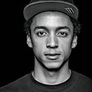

STRONA PASJONATÓW DESKOROLKI
 Nyjah Huston
Nyjah Huston

Data i miejsce urodzenia: 30 listopada 1994 (21 lat), Davis, Kalifornia, Stany Zjednoczone
Wzrost: 1,75 m
Waga: 66 kg
Luan Oliveira
Data i miejsce urodzenia: 22 wrzesnia 1990 (25 lat), Porto Alegre, Rio Grande do Sul, Brazylia
Wzrost: 1,69 m
Waga: 65kg
Paul Rodriguez
Data i miejsce urodzenia: 31 grudnia 1984 (31 lat), Tarzana, Los Angeles, Kalifornia, Stany Zjednoczone
Wzrost: 1,74 m
Waga: 70kg
Torey Pudwill
Data i miejsce urodzenia: 2 maja 1990 (25 lat), Simi Valley, Kalifornia, Stany Zjednoczone
Wzrost: 1,75 m
Waga: 61 kg